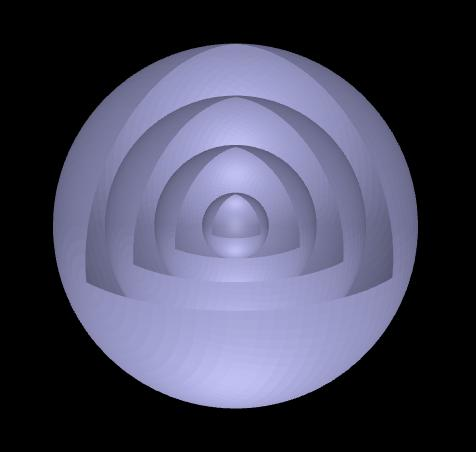

Image 1
Spherical wave, Wavelength = 400 mm.
To download the high resolution image, copy the following link into your

Image 2
Spherical wave, Wavelength = 700 nm.
To download the high resolution image, copy the following link into your
Image 3
Plane wave, Wavelength = 500 nm.
To download the high resolution image, copy the following link into your
Image 4
Plane wave, Wavelength = 800 nm.
To download the high resolution image, copy the following link into your